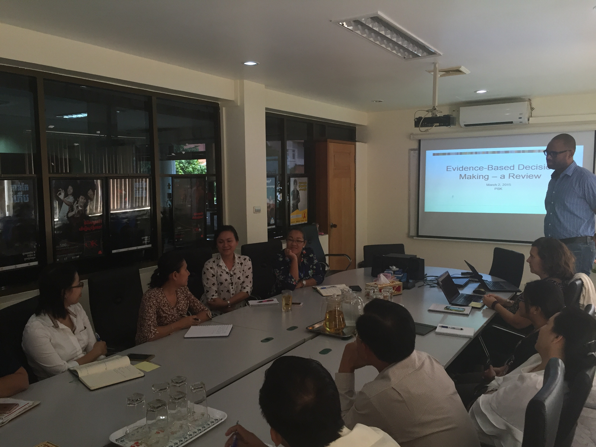
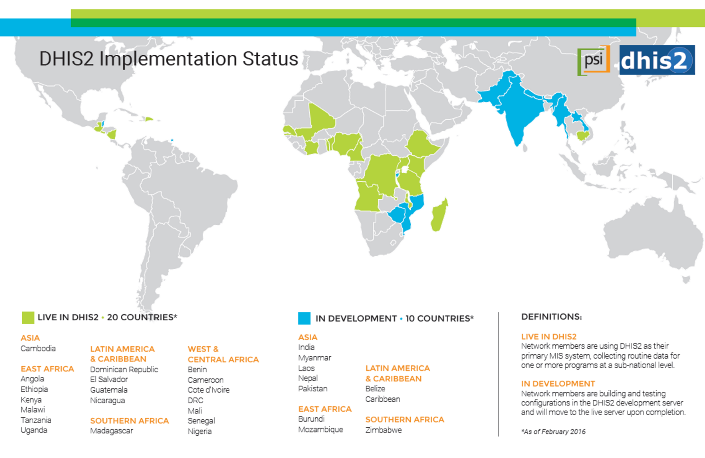
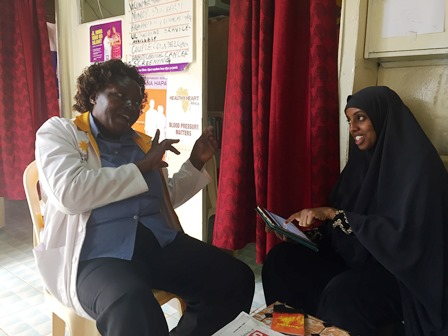
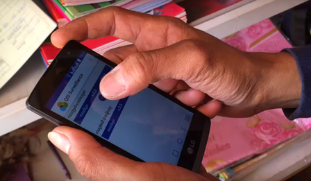

Table of Contents
This interview was conducted in May 2016, with Sarah Romorini, senior program manager at PSI. The aim was to learn how DHIS2 was rolled out and how it's being used by PSI today. Sarah Romorini has worked with PSI for the past ten years, most recently with the implementation of DHIS2.
Founded in 1970, PSI provides lifesaving products, clinical services and behavior change communication that empower the world’s most vulnerable people to lead healthier lives. PSI works in partnership with local governments, ministries of health and local organizations to create health solutions that are built to last.
PSI has over 8,900 staff working on-site and with its affiliates in more than 60 countries. In 2014, PSI’s revenue was calculated at $631,229,922 USD.
In 2011, PSI began its search for a better Management Information System (MIS). Until then, we’d been using a different MIS in every country. Even within countries we'd have different systems for different projects. We were stuck with highly customized systems for every project; a mix of a Microsoft Excel, Access, and other tools. Programs were cobbling together pieces of information to see trends and analyze their programs. Accessing data like this wasn’t very efficient.
All of these unique, siloed systems led PSI to reflect upon two larger questions: how does PSI want to engage with its information, both locally and globally? And how do we want data to influence both the strategic and everyday program questions that PSI tackles?
We chose DHIS2 for its ability to collect, manage, and visualize information.This system makes it easier for our programs to collect information and make data-driven decisions. It’s an incredibly powerful and flexible resource!
For example, users can set up their own entry forms, indicators and reports. DHIS2 is easily integrated with other interfaces. We especially liked that data collection and monitoring can be adapted for all program areas, including referrals, health services, sales and distribution.
|  |
We did it in true PSI fashion; we dived right in! We started with pilot projects that were rolled out nationwide in Kenya, El Salvador, Uganda and Senegal. It was a huge benefit to have a low-complexity country like El Salvador and a high-complexity country like Kenya and Uganda using DHIS2.
Kenya was PSI’s largest pilot project for DHIS2. In Kenya, there’s a wide range of programs on DHIS2, including malaria, HIV, family planning, social franchising, hypertension, sales, cervical cancer, and others.
In El Salvador, PSI’s reproductive health program was the first to join DHIS2. This helped monitor the effectiveness of interpersonal communication, quality assurance visits, and provider performances.
|  |
After setting up our two pilot projects, DHIS2 grew very quickly. PSI has over 20 countries reporting their data using DHIS2 on the production server and several more are in development. Over 60 PSI countries use DHIS2 to report their monthly aggregated health services data.
We work closely with PSI’s country teams so they feel empowered to use, manage, and analyze their data using DHIS2. During our implementations, in-country DHIS2 stars are identified and PSI provides coaching and assistance to empower them to integrate data for decision making into their every day program management.
We also identify local technical leads who can support DHIS2 maintenance and adapt the system to meet their teams’ needs. For example, we’re implementing DHIS2 in Zimbabwe. Our team is working closely with our "local star" there, and he’s learning how to build and do the configuration himself. It’s exciting to see how DHIS2 is really owned by PSI Zimbabwe—the data in DHIS2 is theirs and they’re using it. This is the kind of goal we aspire to.
PSI collaborates with DHIS2 builders, who do the technical configuration work, that is, building the DHIS2 system to match the DHIS2 blueprint, which is based on the PSI country team’s data use needs.
We collaborate with HISP agencies in India, Vietnam, Uganda, West Africa, and Colombia. We also work with BAO Systems, the largest US-based DHIS2 consulting and hosting firm in North America, for configuration support.https://baosystems.com/ .
DHIS2 builders are supervised by PSI’s DHIS2 architects. They ensure our configurations are of high quality, and they train local technical leads and help DHIS2 builders to learn our standards.
As part of our long-term sustainability goals, we’re offering more training opportunities for local PSI staff on DHIS2 administration and data usage. Before, we would create these trainings a little on-the-fly because there were fewer countries, but now we’re starting to create more standard, ready-to-go training resources.
We're using the aggregate data forms most. PSI is looking into using Tracker to look at individual data, register individual cases, track individual cases and then conduct surveys.
We’ve recently transitioned to BAO Systems to help PSI to field its help desk tickets. We try to have a local DHIS2 administrator in each PSI country we work in. This person can usually field basic questions, like how to reset a password, or intermediate ones, like how to create a new form.
PSI develops custom reports and apps to make real time data collection and analysis even easier. Our apps address key strategic and technical areas, including franchise management and provider performance, improving network quality, and case surveillance (such as malaria).
We developed the HNQIS app to improve network quality and provider performance. It helps Quality Assurance (QA) officers plan their supervision routes and target low-performing providers with high client volume.
|  |
PSI uses this mobile app in Cambodia to report positive malaria cases in almost real-time. Pharmacists collect basic data points such as geographic location, type of malaria detected and age and gender of the client. It helps us to identify outbreaks and re-direct resources to where they are the most needed. You can check out the app here: Google Play.
|  |